I study mechanical engineering at Stanford, class of 2028. I spent summer 2026 on carbon nanotube synthesis research in the Boies Lab. I build mechanical things: a spring launcher, a stage, and now an aluminum piano.
I'm from Walnut Creek, California. In summer 2026 I worked on carbon nanotube synthesis in the Boies Lab, running a 1300 °C reactor and testing injector configurations. Outside the lab I like projects I can put my hands on: a purely mechanical launcher, a stage built for a party, and an aluminum piano I'm making for ME 103.
I also produce music and DJ as Hongsta, and played lead trumpet with NYO Jazz at Carnegie Hall (2024) and on a European tour under Luis Bonilla (2025). Some of the engineering serves the music directly: I DJ'd from the stage and DJ table I built, and the piano is an instrument.
03
Education
Stanford University — B.S. Mechanical Engineering
2024–2028 (EXPECTED)
GPA 3.7.
Coursework: Thermodynamics, Fluid Mechanics, Dynamics, ME 102 Product Realization, ME 103, Linear Algebra, Multivariable Calculus, Differential Equations.
Covered control volume analysis, Bernoulli, dimensional analysis, boundary layer theory, sand casting, and manual milling.
04
Research
Summer Undergraduate Researcher — Boies Lab
JUNE – SEPT 2026
STANFORD SCHOOL OF ENGINEERING
I tested injector configurations in a floating-catalyst CVD reactor that runs at 1300 °C. Counterflow injection, versus main-flow, raised carbon nanotube production to 216 mg/hr.
Found the optimal injection point, 28.3 cm, through repeated experimental runs.
Designed the custom quartz-tube flange assemblies in Fusion 360: sealing geometry and injector-tube integration for high-temperature service.
Worked alongside a PhD collaborator, iterating reactor geometry against experimental results.
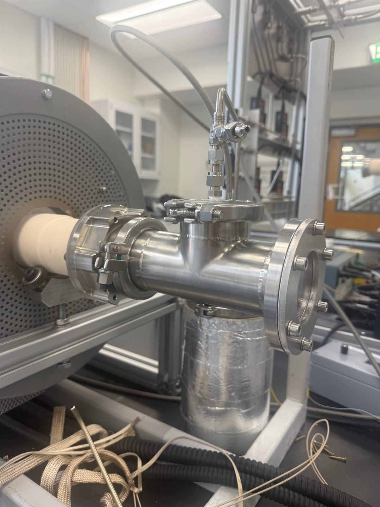
FIG. 4.1 — Flange assembly on the reactor, injector line at top.
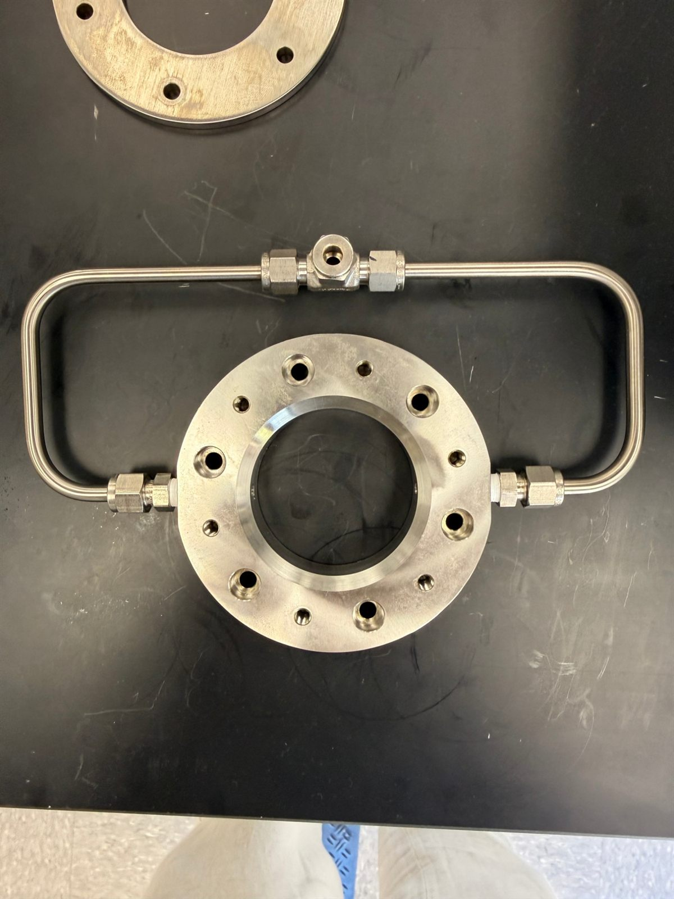
FIG. 4.2 — Flange with injector feed loop, on the bench.
A 20-key MIDI keyboard, E to B (12 white keys, 8 black), made entirely of 356A aluminum. The frame, base, and key blanks are sand cast in the PRL foundry from 3D-printed PLA patterns, then finished on a manual mill. The keys pivot on a Ø.250 in stainless rod, and a glass window sits in the back wall.
All 12 white keys are cast and machined as one 11 in bar, and the 8 black keys as one 4.2 in bar, so every key gets the same profile. The bars are sawed apart afterward. All 20 pivot holes are drilled in one setup so they line up on the rod.
Writing the operations sequence turned up five things to fix in CAD before printing patterns. The enclosed glass slot can't be sand cast, so it became an open rabbet. The top skin was .044–.056 in thick, too thin for the casting to fill, so it goes to about 3/16 in. Both pivot holes were blind, so the rod couldn't go in. The key stack had no end clearance, and the screws reached only about .10 in into the frame.
The BOM comes to $104.84 against a $130 budget. Electronics are a later phase.
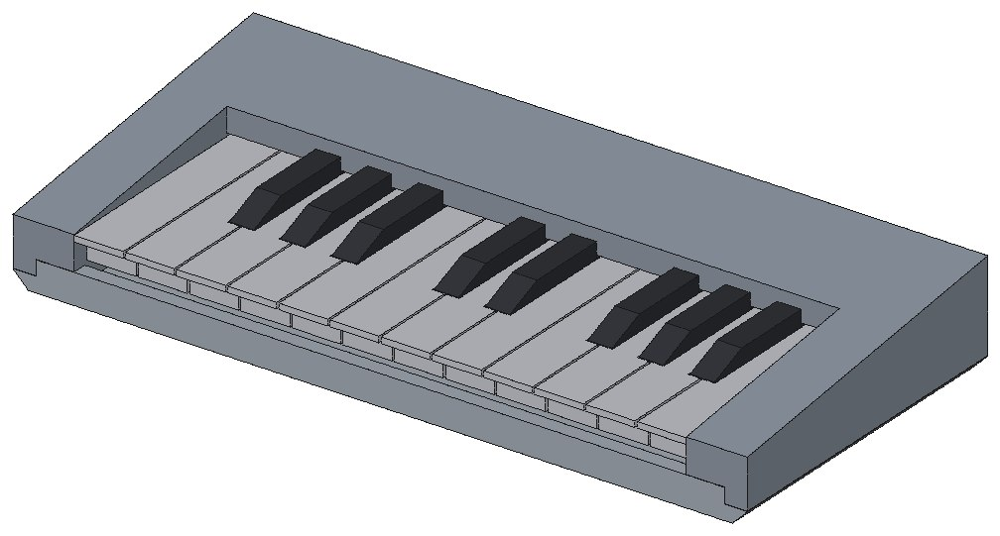
FIG. 5.1 — Assembly, front.
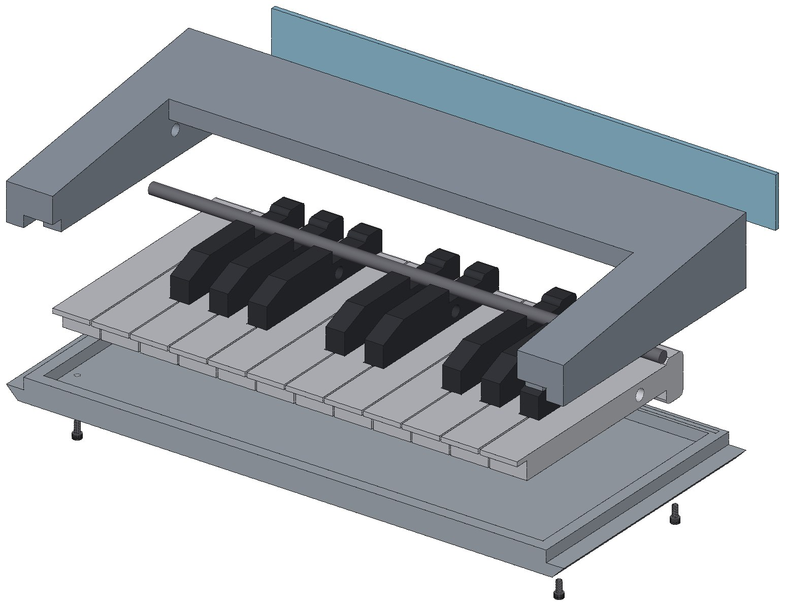
FIG. 5.2 — Exploded: frame, glass, keys on the pivot rod, base.
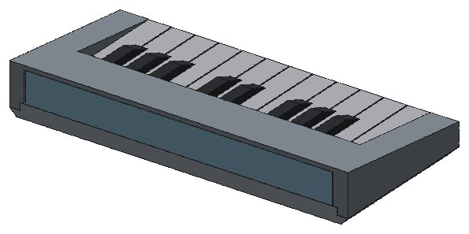
FIG. 5.3 — Assembly, back, with the glass window.
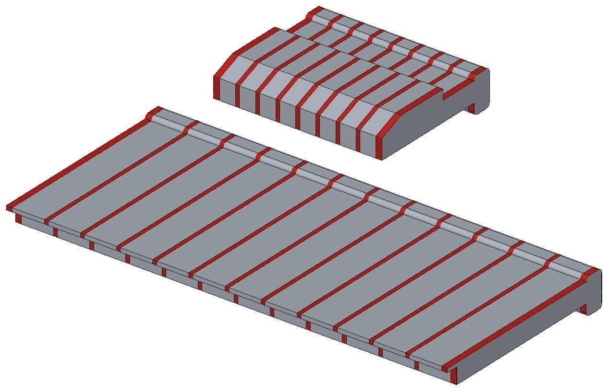
FIG. 5.4 — OP 40: sawing the cast bars into keys at .900 and .500 in pitch. Red is material removed.
A purely mechanical, spring-driven launcher inside a 12 × 12 × 24 in envelope. It fired through a target board at 5–7 ft over a two-minute run. The scored design metric was the static counterweight resisting launch reaction forces — I cut it with geometry instead of added mass, down to [final ballast, lb]. The paper trail: free-body diagrams, force and moment balances, stored-energy calculations, and a dimensioned drawing package with tolerances, BOM, and exploded views. Parts were laser-cut and 3D-printed. The Fusion assembly has six parts: base, barrel, funnel, slider, slot, and shaft.
A wooden stage, DJ table, and tiered platforms for Sigma Nu's Sunsplash, an event with ~1,340 RSVPs. I modeled it in Fusion 360: 17 platforms in four sizes (a 2 ft stage, 1 ft and standard die tables, and 4 ft die tables with rails), 8 fence sections, and the DJ table. I sized the 2×4, 4×4, and plywood members from that model. Then we bought the lumber and built it on site.
The aluminum truss over the DJ table was bought, not built. I DJ'd the party from the table.
FIG. 5.8 — Stage at night, mid-paint.
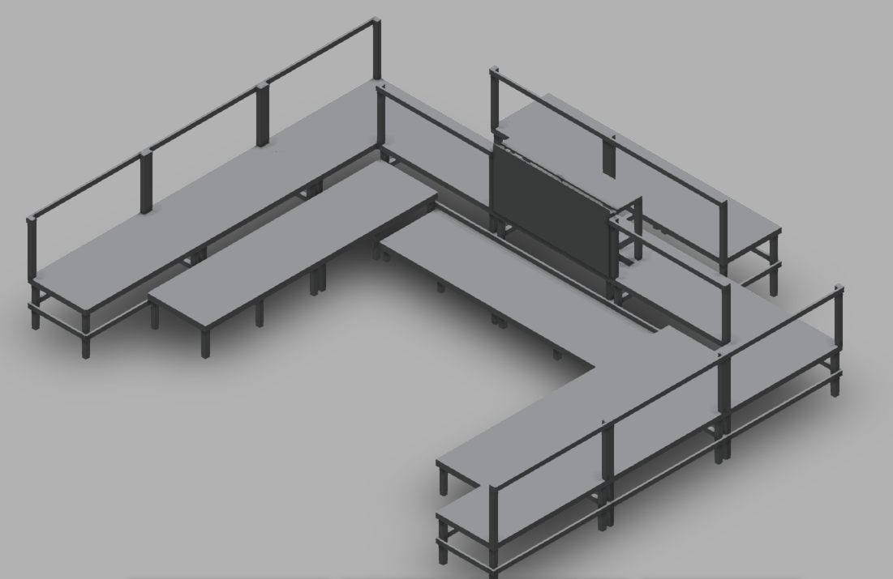
FIG. 5.9 — Fusion 360 layout.
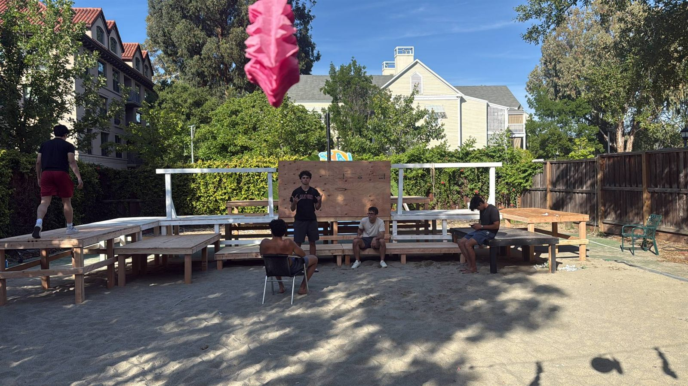
FIG. 5.10 — Framing on site, before paint.
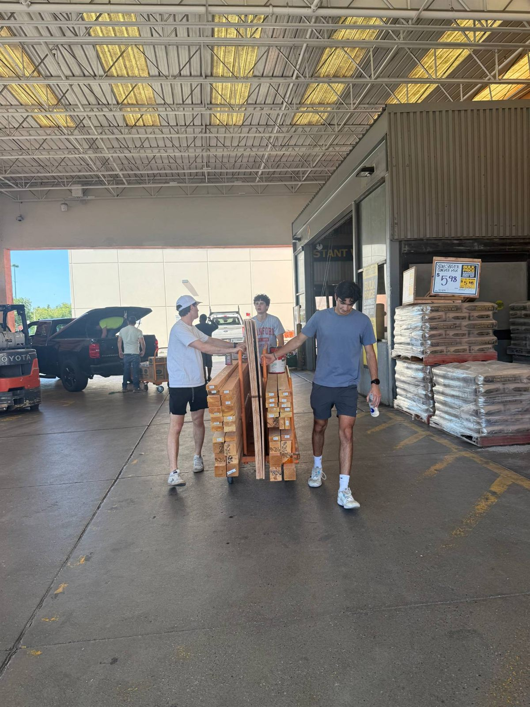
FIG. 5.11 — Lumber run.
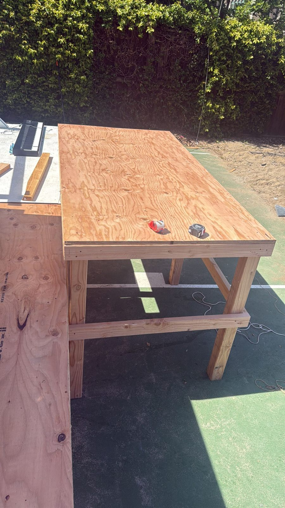
FIG. 5.12 — One die table, plywood on a braced frame.
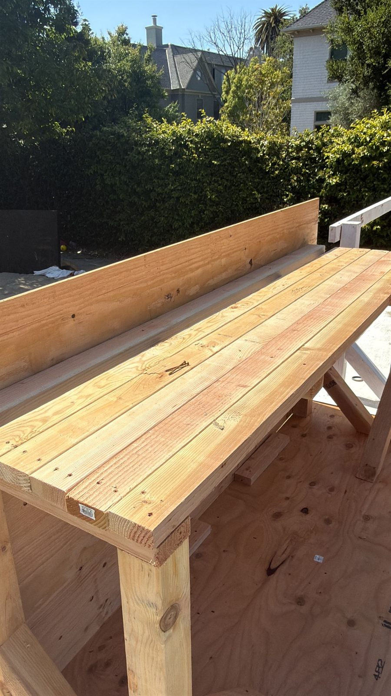
FIG. 5.13 — DJ table, before paint.FIG. 5.14 — DJing the party from the table.FIG. 5.15 — The crowd, from behind the DJ table.